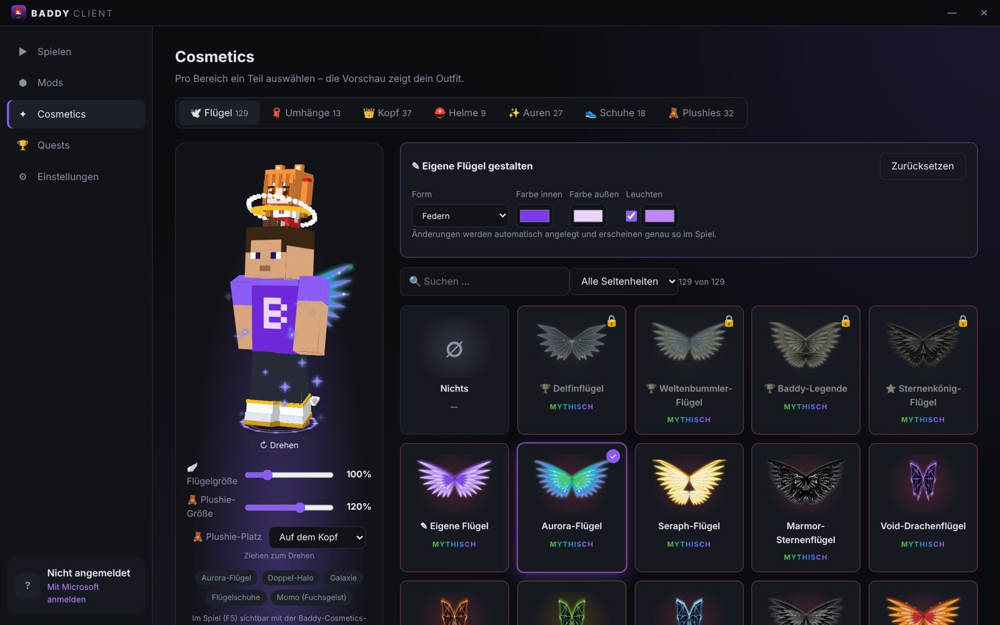

▸ Was drin ist
Alles, was ein Client können muss.
Der Launcher holt Minecraft, Java und Fabric automatisch. Du wählst nur noch aus, was du anziehen willst.
Cosmetics
In 3D, genau wie im Spiel
Flügel, Umhänge, Halos, Helme, Stirnbänder, Schuhe, Auren und Plushies. Dreh die Vorschau mit der Maus und sieh es mit F5 im Spiel.
Bild-Umhang mit eigenem PNGFoto-StirnbandKetten-Halo S/WFlügelgröße einstellbar

🧸
Anime-Plushies
Sitzen auf der Schulter oder dem Kopf, winken und zwinkern. Beim Schleichen schlafen sie ein.
⚡
Mehr FPS
Eigener Performance-Modus im Spiel, jede Einstellung einzeln. Dazu 10 empfohlene FPS-Mods mit einem Klick.
🏆
Quests
Laufen, abbauen, schwimmen: der Client zählt mit. Geschaffte Quests schalten exklusive Cosmetics frei.
💃
Emotes
Taste B öffnet das Emote-Rad: Floss, Twerk, Winken, Dab, Tanzen und mehr.
✨
Dein Design
Liquid Glass, Neon oder Minimal, eigene Farben und Schriften. Das Hauptmenü im Spiel baust du per Drag & Drop um.
🧩
Mods einfach
Mods von Modrinth und CurseForge suchen und installieren, an- und ausschalten, eigene .jar-Dateien reinziehen. Einstellungen und Mods aus Lunar lassen sich übernehmen.
🔐
Sicher anmelden
Login über das offizielle Microsoft-Fenster. Der Baddy Client sieht dein Passwort nie.